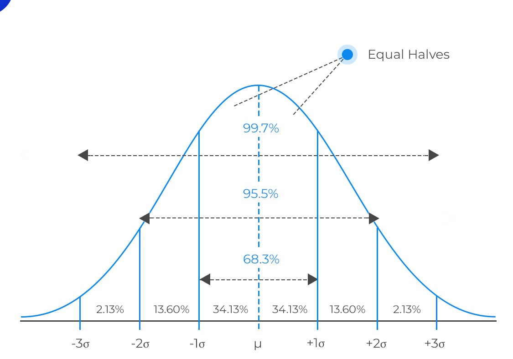
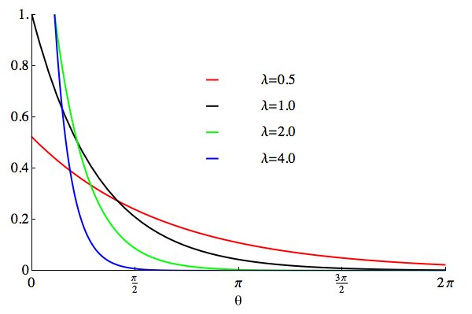
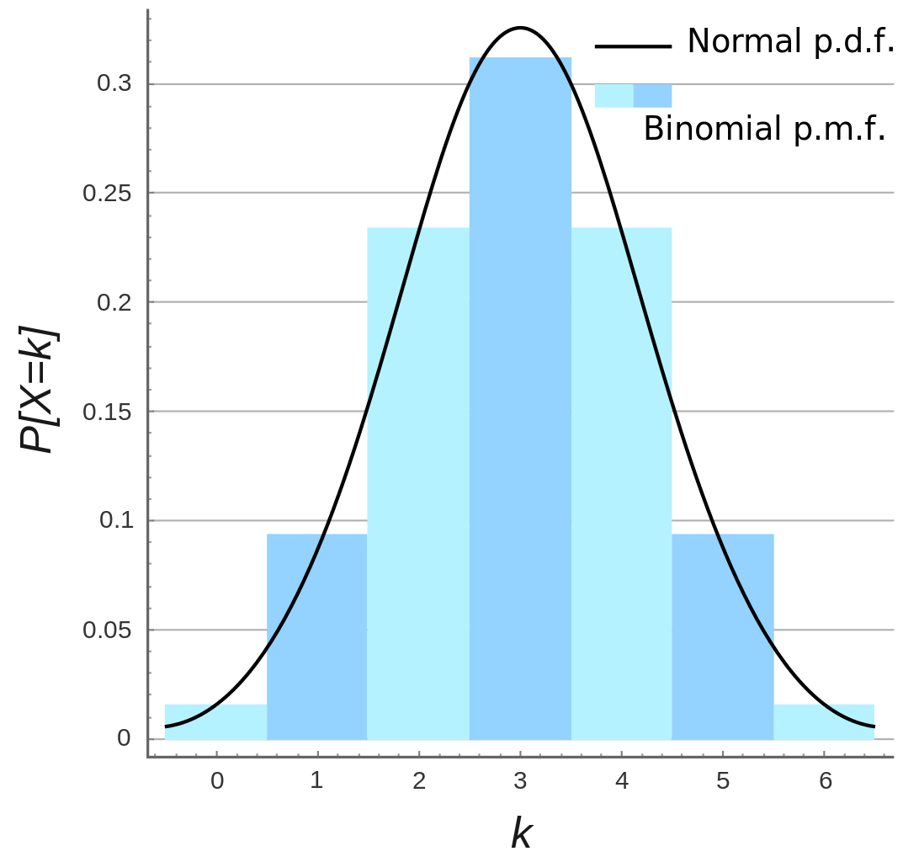
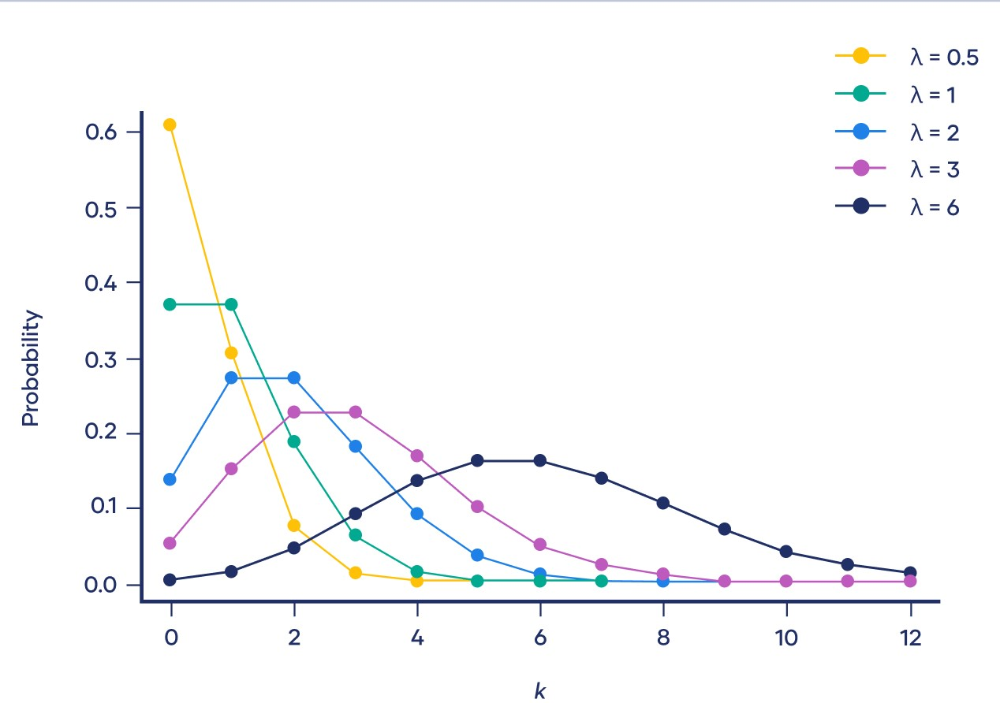

Statistical distributions play a crucial role in probability theory and statistics. They describe the likelihood of different outcomes in a given set of events.
Continuous Distributions
Continuous distributions are associated with random variables that can take any value within a specified range. For example, length x = 2.567 mm and temperature t = 12.57 K.
Continuous distributions are typically described by probability distribution functions. The probability density function (or pdf) is a function that is used to calculate the probability that a continuous random variable will be less than or equal to the value it is being calculated at: Pr(a≤X≤b) or Pr(X≤b).
We can also describe it as the following integral:
\[ CDF(x) = \int_{-\infty}^{0} PDF(x) \, dx \]
\[ CDF(b-a) = CDF(b) - CDF(a) = \int_{a}^{b} PDF(x) \, dx \]
Is important to remember that when we consider a continuous distribution usually, any individual outcome has probability zero and only events that include infinity outcomes, like intervals, can have probability bigger than 0. So, in this case, is bettere using intervals.
Examples
Normal Distribution: Describes a symmetric, bell-shaped curve.
- Properties: Mean (μ) and standard deviation (σ) determine the distribution. About 68% of values fall within one standard deviation, 95% within two, and 99.7% within three.
- Simulation: The Box-Muller transform is often used to generate random numbers with a standard normal distribution.

Exponential Distribution: Models the time between events in a Poisson process.
- Properties: Memoryless property: P(X > a + b | X > a) = P(X > b).
- Simulation: Inverse Transform Sampling is commonly used to generate random numbers from an exponential distribution.

Discrete Distributions:
Discrete distributions deal with random variables that can only take distinct values. It is a variable that has a value with finite (integer) interval and has a finite limit. For example, the number of people in a queue = 15 people.
These distributions are defined by probability mass functions. The probability mass function (or pmf) calculates the probability that the random variable will assume the one specific value that it is being calculated at: Pr(X=a).
Examples
Binomial Distribution: Describes the number of successes in a fixed number of independent Bernoulli trials.
- Properties: Mean (μ) = n * p, where n is the number of trials and p is the probability of success. Variance (σ²) = n * p * (1 - p).
- Simulation: Can be simulated using the binomial theorem or Monte Carlo methods.

Poisson Distribution: Models the number of events occurring in a fixed interval of time or space.
- Properties: Mean (μ) = λ, where λ is the average rate of occurrence. Variance (σ²) = λ.
- Simulation: Poisson random number generators are commonly used.

Simulation:
Some simulations are implemented to realize the Homewrok 2 and the Homewrok 4,
where the continuous variable is the student's height and the student's age is the discrete one.
The following simulation is a Monte Carlo simulation: points inside the circle are shown in green, otherwise they are red.
Bibliography:
Lecture notes from the lesson of the statistics course